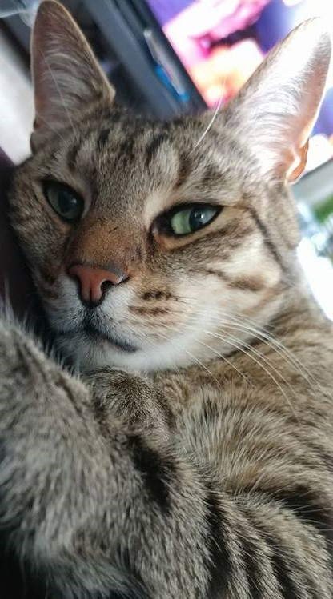

This is a story of a cat named Truman...
Truman, aka "Nurse Cat", was adopted from Homeward Pets in 2014 shortly after my husband and I moved to Seattle.
We knew from the start that Truman was special, but we didn't know how much so until we brought him home.
Nurse Cat
We decided to adopt an animal companion for me after moving here so that I would have some company at home while my husband was working.
Due to my chronic illness, I was spending a lot of time at home, and since we had just moved and didn't know anyone in town, we thought a cat would be a great companion.
Right off the bat, it was obvious that Truman could tell when I was having a flare up.
He would lie with me in bed for hours and even put a paw on my forehead when I was running a fever.

Truman & his Halloween shirt
Another thing sopecial about Truman is his love of clothing. It started with a $3 Halloween shirt...
And it progressed from there.

In fact, once in the shirt, Truman perferred to stay in it.